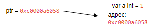

Указатели
Указатели — это переменные, которые указывают на адрес других переменных. Они объявляются почти как обычные переменные, за исключение, что перед типом данных ставится символ звездочки *. Например, определение указателя на объект типа int:
var ptr *int
Данному указателю можно присвоить адрес переменной типа int. Для получение адреса применяется операция &, после которой указывается имя переменной (&a):
package main
import "fmt"
func main() {
var a int = 1 // определяем переменную
var ptr *int // определяем указатель
ptr = &a // указатель получает адрес переменной
fmt.Println(ptr) // значение самого указателя - адрес переменной a
}
В данном примере указатель ptr хранит адрес переменной a. Что важно, переменная a имеет тип int, и указатель ptr указывает именно на объект типа int. То есть должно быть соответствие по типу. И если мы попробуем вывести адрес переменной на консоль, то увидим, что он представляет шестнадцатеричное значение:
0xc0000a6058
В каждом случае адрес может отличаться, но в текущем примере, машинный адрес переменной a - 0xc0000a6058. Таким образом, в памяти комьютера есть адрес 0xc0000a6058 по которому распологается переменная a.

Оператор разименования
По адресу, который хранит указатель, мы получить значение переменной a. Для этого применяется операция * (операция разыменования). Результатом этой операции является значение переменной, на которую назначен указатель. Если мы применим эту операцию, то получим значение переменной a:
package main
import "fmt"
func main() {
var a int = 1
var ptr *int = &a
fmt.Println("Адрес переменной а:", ptr) // Адрес переменной а: 0xc000018088
fmt.Println("Значение переменной а:", *ptr) // Значение переменной а: 1
Более того, через указатель с помощью оператора разименования мы можем изменить значение переменной, на который указывает наш ptr:
package main
import "fmt"
func main() {
var a int = 1
var ptr *int = &a
*ptr = 5
fmt.Println("Значение переменной а:", a) // Значение переменной а: 5
}
Также при объявлении указетеля, можно использовать сокразенную форму:
package main
import "fmt"
func main() {
var b int = 2
ptr := &b
fmt.Println("Адрес b:", ptr) // Адрес b: 0xc000018088
fmt.Println("Значение b:", *ptr) // Значение b: 2
}
Пустые указатели
В случае, есил указателю не присвоить адрес какой-либо переменной (или любого другого объекта), то он будет иметь пустое значение (nil). При попытке получить значение такого указателя мы получим ошибку:
package main
import "fmt"
func main() {
var ptr *string
fmt.Println("Значение:", *ptr) // runtime error: invalid memory address or nil pointer dereference
}
Чтобы избежать этой ошибки в Go часто используют следующую коснтрукцию, которая проверяет указатель на наличие адреса:
package main
import "fmt"
func main() {
var ptr *string
if ptr != nil {
fmt.Println("Значение:", *ptr)
} else {
fmt.Println("Указатель ptr имеет nil значение!")
}
}
Функция new
Встроенная функция new выделяет память (создает неименованную переменную и возваращет указатель на ее значение). В эту функцию передается тип, объект которого надо создать. Функция возвращает указатель на созданный объект:
package main
import "fmt"
func main() {
ptr := new(int)
fmt.Println("Адрес:", ptr) // Адрес: 0xc0000a6058
fmt.Println("Значение до присвоения:", *ptr) // Значение до присвоения: 0
*ptr = 10
fmt.Println("Значение после присвоения:", *ptr) // Значение после присвоения: 10
}
В этом примере указатель ptr будет иметь тип *int, поскольку он указывает на объект типа int. Созданный объект ptr имеет значение по умлочанию (для int это 0).
По сути, объект, созданный с помощью функции new(), ничем не отличается от обычной переменной. Единственное что, чтобы обратиться к этому объекту, наприме, получить или изменить его адрес, необходимо использовать указатель.